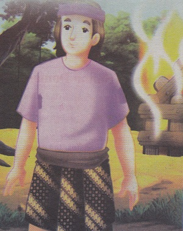
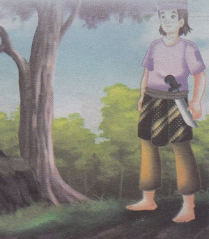
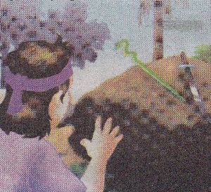
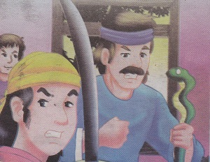
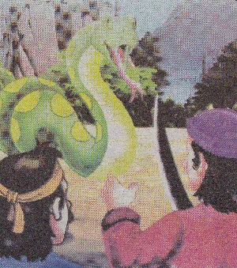
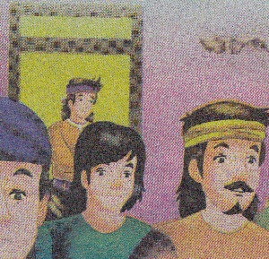
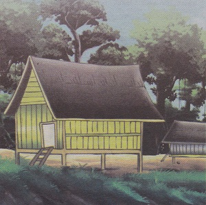

Sultan Domas
( Certa Rakyat Lampung )
Dahulu kala, di Lampung hidup seorang pemuda bernama Domas. Ibu dan ayahnya sudah meninggal dunia. Karena miskin, Domas sering dihina penduduk kampung sehingga ia jarang keluar dari gubuk peninggalan orang tuanya. Domas tidak mau membenci penduduk kampung meski mereka suka menghinanya. Pada suatu hari, ketika Domas pulang mencari kayu bakar di hutan, ia mendapatkan gubuknya sudah dibakar orang. Perasaan Domas hancur lebur, ia merenungi nasibnya yang malang dan ingin bunuh diri.
Akan tetapi,
pada suatu malam ia bermimpi didatangi seorang kakek berjanggut
putih. Kakek itu berkata “Pergilah ke arah selatan. Jika kau
bertemu sebuah sungai besar yang banyak dikelilingi pohon besar,
memetaplah disana. Bukalah ladang disana untuk ditanami sayur dan
buah-buahan sebagai bekal sehari-hari.” Setelah mendengar pesan itu
Domas terbangun dan ia pun termenung.
Pagi sekali ia berangkat meninggalkan kampung halaman. Ia melalui berbagai kampung, masuk hutan ke lar hutan. Berbulan-bulan kemudian, sampailah ia disebuah hutan yang lebat. Disana ada sebuah sungai besar yang berair jernih. Domas tertegun, ia teringat pesan kakek dalam mimipi. Segera saja ia mengumpulkan kayu untuk membuat pondok di tepi sungai. Setelah membangun pondok, ia menebang kayu untuk dibuat ladang. Domas sangat senang dan merasa tentram tinggal disitu apa lagi ikan-ikan disungai cukup mudah didapat.
Karena tidak ada pekerjaan lain maka Domas sering melakukan semedi atau bertapa. Waktu berlalu dengan cepat. Pada suatu malam ketika ia sedang bersemedi, ia mendapat pesan gaib. Ia diberi ilmu kesaktian serta sebilah pedang dan tongkat kayu berbentuk ular. Ia mengucapkan syukur kepada Tuhan atas pemberian itu. Namanya pun sekarang ditambah dengan Sultan sehingga ia biasa dipanggil dengan nama Sultan Domas.
Pada suatu hari ketika Sultan Domas mencari ikan di hulu sungai, datanglah lima orang lelaki berwajah seram ke pondoknya. Ternyata mereka sudah lama megintip dan menunggu sultan Domas pergi dari pondok. Mereka ingin mencuri pedang dan tongkat Sultan Domas. Ketika Sultan Domas pergi agak jauh menyusuri aliran sungai, mereka segera menuju ke pondok. Semua barang milik Sultan Domas diamil, termasuk sebilah pedang dan tongkat kayu.
Setelah mendapatkan semua yang diinginkan, mereka bermaksud meninggalkan pondok dan membakarnya. Mereka segera pergi, tetapi di depan pintu mereka terhenti karena ada seekor ular besar yang mengeluarkan semburan berhawa panas. Mereka panik dan membuka dinding bagian belakang pondok. Akan tetapi, di sana juga ada seekor buaya besar yang siap menerkam. Dengan perasaan takut, kelima orang jahat itu terkepung di dalam pondok sampai Sullat Domas Pulang.
Sultan domas tidak terkejut ketika melihat orang-orang jahat itu di dalam pondok. Bahkan, dengan ramah ia menyapa kelima orang yang sedang ketakutan itu. Mereka tidak bisa berbicara, mulut serasa terkunci. Sultan Domas memberi salam satu per satu kepada kelima orang itu. Ajaib, kelima jahat orang itu bisa mambuka mulut. Sultan Domas hanya tersenyum dan mengajak mereka bermalam di pondoknya.
Setelah kelima orang itu pulang, tersebarlah di seluruh daerah bahwa di pinggir sungai dalam hutan Way Sekampung ada orang sakti yang sangat baik sifatnya. Kemudian, lama-kelamaan tempat itu menjadi perkampungan. Sultan Domas pun diangkat menjadi pemimpin. 